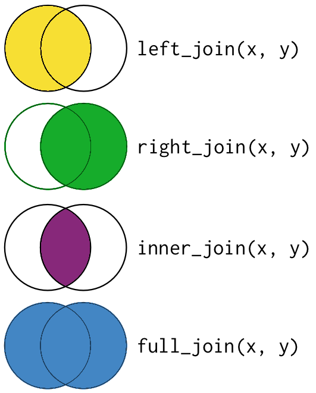

Workshop: Dealing with Data in R
Illustration from the Openscapes blog Tidy Data for
reproducibility, efficiency, and collaboration by Julia Lowndes and Allison Horst
Summarizing & Transforming Data in R
Saving you time and sanity
steffilazerte
@steffilazerte@fosstodon.org
@steffilazerte
steffilazerte.ca

Compiled: 2026-02-19
First things first
Save previous script
Open New File
(make sure you’re in the RStudio Project)
Write library(tidyverse) at the top
Save this new script
(consider names like summarizing.R or 4_sum_and_trans.R)
Types of Modifications
1. Subset
filter()observations (rows)select()variables (columns)
2. Joining data sets
left_join(),right_join(), etc.
3. Creating new columns
- Creating categories
- Column calculations
- By group
mutate()(andgroup_by())
4. Summarize existing columns
- Summarizing by group
summarize()
5. Transpose
- Going between wide and long data formats
pivot_wider()andpivot_longer()
- Transposing for analysis
- Transposing for visualizations
Getting ready
Check out the data:
Using data sets:
# A tibble: 114 × 9
plot depth coarse_sand medium_sand fine_sand coarse_silt medium_silt fine_silt clay
<chr> <dbl> <dbl> <dbl> <dbl> <dbl> <dbl> <dbl> <dbl>
1 CSP01 4 13.0 17.4 19.7 14.1 11.2 8.17 16.3
2 CSP01 12 10.7 16.9 19.2 14.1 11.7 9.03 18.4
3 CSP01 35 12.1 17.8 16.1 10.3 9.51 7.47 26.7
4 CSP01 53 17.6 18.2 14.3 9.4 9.1 8.7 22.7
5 CSP01 83 21.0 18.4 14.3 9.79 8.79 7.29 20.4
6 CSP01 105 19.0 18.4 14.4 10.8 9.4 8.22 19.7
7 CSP08 10 11.6 17.1 20.8 16.3 9.55 6.23 18.4
8 CSP08 27 15.4 16.2 17.8 14.3 10.4 6.1 19.6
9 CSP08 90 14.9 15.8 18.6 15.1 11.5 7.56 16.5
10 CSP02 5 8.75 8.64 8.66 12.0 18.3 15.2 28.5
# ℹ 104 more rowsSubsetting
By rows and column
filter() observations
filter() is from dplyr*
* part of the tidyverse
tidyversefunctions always start with data- Column
expressions reference actual columns in data - Here we use logical statements relating to column values

filter() observations
filter() by category
# A tibble: 9 × 9
plot depth coarse_sand medium_sand fine_sand coarse_silt medium_silt fine_silt clay
<chr> <dbl> <dbl> <dbl> <dbl> <dbl> <dbl> <dbl> <dbl>
1 CSP13 2 22.1 17.5 18.3 11.9 7.92 6.05 16.3
2 CSP13 10 12.1 14.9 18 13.1 10.4 7.92 23.6
3 CSP13 25 13.7 12.7 14.3 11.7 9.67 6.31 31.6
4 CSP13 60 27.1 9.74 11.1 9.69 9.79 7.82 24.8
5 CSP13 140 10.4 15.3 16.0 12.4 12.4 10.2 23.5
6 CSP11 20 6.67 3.94 5.52 23.7 23 14.8 22.3
7 CSP11 30 5.27 4.23 6.11 23.6 23.9 15.3 21.6
8 CSP11 47 4.34 4.03 6.62 24.5 25.5 13.8 21.3
9 CSP11 143 5.28 4.26 7.07 22.8 28.0 12.4 20.2
filter() observations
filter() by measures
# A tibble: 9 × 9
plot depth coarse_sand medium_sand fine_sand coarse_silt medium_silt fine_silt clay
<chr> <dbl> <dbl> <dbl> <dbl> <dbl> <dbl> <dbl> <dbl>
1 CSP13 2 22.1 17.5 18.3 11.9 7.92 6.05 16.3
2 CSP19 190 3.33 4.28 14.2 42.8 21.5 9.92 4
3 CSP11 143 5.28 4.26 7.07 22.8 28.0 12.4 20.2
4 CSP14 3 16.1 15.0 17.5 12.2 12 9.88 17.3
5 CSP15 146 13.6 12.3 12.5 12.0 18.1 10.4 21.1
6 CSP20 3 5.12 5.09 17.9 25.9 14.3 11.8 19.9
7 CSP20 150 22.7 12.9 12.7 17.7 14.9 7.59 11.5
8 CSP21 3 14.1 11.6 11.9 14.1 15.5 10.4 22.4
9 CSP22 182 17.9 13.6 13.1 13.5 12.6 8.39 20.9
filter() observations
filter() by a combination use comma for AND
# A tibble: 2 × 9
plot depth coarse_sand medium_sand fine_sand coarse_silt medium_silt fine_silt clay
<chr> <dbl> <dbl> <dbl> <dbl> <dbl> <dbl> <dbl> <dbl>
1 CSP13 140 10.4 15.3 16.0 12.4 12.4 10.2 23.5
2 CSP11 143 5.28 4.26 7.07 22.8 28.0 12.4 20.2Tangent
Logical Operators
Logical Operators
Possible options
| Operator | Code |
|---|---|
| OR | | |
| AND | & |
| EQUAL | == |
| NOT EQUAL | != |
| NOT | ! |
| Greater than | > |
| Less than | < |
| Greater than or equal to | >= |
| Less than or equal to | <= |
| In | %in% |
Your turn!
What do the following filters do?
select() variables
select() is from dplyr*
* part of the tidyverse
tidyversefunctions always start with data- Specify columns to keep or remove
- Column
selections reference actual columns in data
select() variables
select() by name
Some other helper functions (?select_helpers):
| Function | Usage |
|---|---|
starts_with() |
starts_with("fine") |
contains() |
contains("sand") |
everything() |
Useful for rearranging |
matches() |
Uses regular expressions |
select() variables
Put it all together
To explore the data
Your turn: Subsetting
- Subset the data to variables plot, depth and all measures of sand
- Keep only values where there is at least 30% clay
Note:
All particle values are percentages (depth is cm)
Too Easy?
What happens if you select() before you filter()?
How many different ways can you select these columns?
Your turn: Subsetting
- Subset the data to variables plot, depth and all measures of sand
- Keep only values where there is at least 30% clay
size <- read_csv("data/grain_size2.csv") |>
filter(clay >= 30) |>
select(plot, depth, ends_with("sand"))
head(size)# A tibble: 2 × 5
plot depth coarse_sand medium_sand fine_sand
<chr> <dbl> <dbl> <dbl> <dbl>
1 CSP02 36 8.15 9.24 8.55
2 CSP13 25 13.7 12.7 14.3 Select equivalents:
select(plot, depth, ends_with("sand"))select(plot, depth, contains("sand"))select(plot, depth, coarse_sand, medium_sand, fine_sand)select(-coarse_silt, -medium_silt, -fine_silt, -clay)
Your turn: Subsetting (Too Easy?)
What happens if you select() before you filter()?
size <- read_csv("data/grain_size2.csv") |>
select(plot, depth, ends_with("sand")) |>
filter(clay >= 30)Error in `filter()`:
ℹ In argument: `clay >= 30`.
Caused by error:
! object 'clay' not found- Lines are sequential
- First
select()removes columnclay - Then
filter()cannot findclay- (
object 'clay' not found)
- (
Joining or Merging data
Joining data sets
Measurements
| Plot | Date | n_birds |
|---|---|---|
| A | 2025-01-12 | 1 |
| A | 2025-02-05 | 11 |
| A | 2025-03-01 | 2 |
| B | 2025-03-25 | 4 |
| B | 2025-04-18 | 10 |
| B | 2025-05-12 | 21 |
Metadata
| Plot | Vegetation Density |
|---|---|
| A | 50 |
| B | 76 |
Joining them together
Metadata is duplicated to line up with measurements
| Plot | Date | n_birds | Vegetation Density |
|---|---|---|---|
| A | 2025-01-12 | 1 | 50 |
| A | 2025-02-05 | 11 | 50 |
| A | 2025-03-01 | 2 | 50 |
| B | 2025-03-25 | 4 | 76 |
| B | 2025-04-18 | 10 | 76 |
| B | 2025-05-12 | 21 | 76 |
Joining data sets
Index or Metadata
# A tibble: 27 × 4
plot habitat technician date
<chr> <chr> <chr> <date>
1 CSP01 forest Catharine 2009-04-23
2 CSP02 forest Catharine 2009-05-06
3 CSP03 clearcut Jason 2008-09-03
4 CSP04 forest Catharine 2008-09-29
5 CSP05 grassland Catharine 2009-02-05
6 CSP06 grassland Jason 2008-07-01
7 CSP07 grassland Jason 2008-11-19
8 CSP08 grassland Catharine 2009-03-02
9 CSP09 forest Catharine 2008-08-21
10 CSP10 grassland Jason 2009-02-17
11 CSP11 forest Jason 2008-09-16
12 CSP12 grassland Catharine 2009-03-28
13 CSP13 grassland Catharine 2008-07-13
14 CSP14 clearcut Jason 2009-06-01
15 CSP15 forest Yasir 2008-12-02
# ℹ 12 more rowsMeasurements
# A tibble: 114 × 9
plot depth coarse_sand medium_sand fine_sand coarse_silt
<chr> <dbl> <dbl> <dbl> <dbl> <dbl>
1 CSP01 4 13.0 17.4 19.7 14.1
2 CSP01 12 10.7 16.9 19.2 14.1
3 CSP01 35 12.1 17.8 16.1 10.3
4 CSP01 53 17.6 18.2 14.3 9.4
5 CSP01 83 21.0 18.4 14.3 9.79
6 CSP01 105 19.0 18.4 14.4 10.8
7 CSP08 10 11.6 17.1 20.8 16.3
8 CSP08 27 15.4 16.2 17.8 14.3
9 CSP08 90 14.9 15.8 18.6 15.1
10 CSP02 5 8.75 8.64 8.66 12.0
11 CSP02 11 9.89 8.68 8.34 10.7
12 CSP02 36 8.15 9.24 8.55 10.7
13 CSP02 56 12.0 8.63 8.06 11.1
14 CSP02 70 17.5 10.5 8.45 11.2
15 CSP02 78 23.3 15.0 11.0 9.97
# ℹ 99 more rows
# ℹ 3 more variables: medium_silt <dbl>, fine_silt <dbl>, clay <dbl>plot (CSP01, CSP02, etc.) identifies data in both
Types of Join: Which rows to keep?
left_join(x, y)
- Keep all rows in
x - Keep rows in
yonly if they’re also inx

Adapted from “R for Data Science”
right_join(x, y)
- Keep all rows in
y - Keep rows in
xonly if they’re also iny
inner_join(x, y)
- Keep only rows that exist in both data frames
full_join(x, y)
- Keep all rows that exist in either
xory
Joining data sets
left_join() is from dplyr*
* part of the tidyverse
tidyversefunctions always start with data (x)- Here, also need second dataset (
y) byrefers columns inxandyused to join
Joining data sets
Keep all measurements (size), only keep meta if we have a measurement
# A tibble: 114 × 12
plot depth coarse_sand medium_sand fine_sand coarse_silt medium_silt fine_silt clay habitat technician date
<chr> <dbl> <dbl> <dbl> <dbl> <dbl> <dbl> <dbl> <dbl> <chr> <chr> <date>
1 CSP01 4 13.0 17.4 19.7 14.1 11.2 8.17 16.3 forest Catharine 2009-04-23
2 CSP01 12 10.7 16.9 19.2 14.1 11.7 9.03 18.4 forest Catharine 2009-04-23
3 CSP01 35 12.1 17.8 16.1 10.3 9.51 7.47 26.7 forest Catharine 2009-04-23
4 CSP01 53 17.6 18.2 14.3 9.4 9.1 8.7 22.7 forest Catharine 2009-04-23
5 CSP01 83 21.0 18.4 14.3 9.79 8.79 7.29 20.4 forest Catharine 2009-04-23
6 CSP01 105 19.0 18.4 14.4 10.8 9.4 8.22 19.7 forest Catharine 2009-04-23
7 CSP08 10 11.6 17.1 20.8 16.3 9.55 6.23 18.4 grassland Catharine 2009-03-02
8 CSP08 27 15.4 16.2 17.8 14.3 10.4 6.1 19.6 grassland Catharine 2009-03-02
9 CSP08 90 14.9 15.8 18.6 15.1 11.5 7.56 16.5 grassland Catharine 2009-03-02
10 CSP02 5 8.75 8.64 8.66 12.0 18.3 15.2 28.5 forest Catharine 2009-05-06
# ℹ 104 more rowsFor more information see R for Data Science Chapter 19.3 Basic joins
Creating/modifying columns with mutate()

Artwork by @allison_horst
Creating new columns
mutate() is from dplyr*
* part of the tidyverse
tidyversefunctions always start with data- Create new or modify existing
columns in thedata - Columns filled according to
expression
Creating new columns
Creates new column at the end, total_sand
# A tibble: 114 × 10
plot depth coarse_sand medium_sand fine_sand coarse_silt medium_silt fine_silt clay total_sand
<chr> <dbl> <dbl> <dbl> <dbl> <dbl> <dbl> <dbl> <dbl> <dbl>
1 CSP01 4 13.0 17.4 19.7 14.1 11.2 8.17 16.3 50.1
2 CSP01 12 10.7 16.9 19.2 14.1 11.7 9.03 18.4 46.8
3 CSP01 35 12.1 17.8 16.1 10.3 9.51 7.47 26.7 46
4 CSP01 53 17.6 18.2 14.3 9.4 9.1 8.7 22.7 50.1
5 CSP01 83 21.0 18.4 14.3 9.79 8.79 7.29 20.4 53.8
6 CSP01 105 19.0 18.4 14.4 10.8 9.4 8.22 19.7 51.9
7 CSP08 10 11.6 17.1 20.8 16.3 9.55 6.23 18.4 49.6
8 CSP08 27 15.4 16.2 17.8 14.3 10.4 6.1 19.6 49.5
9 CSP08 90 14.9 15.8 18.6 15.1 11.5 7.56 16.5 49.2
10 CSP02 5 8.75 8.64 8.66 12.0 18.3 15.2 28.5 26.0
# ℹ 104 more rowsNote: Column math is vectorized (i.e., row by row)
Tangent
Vectorizing
Tangent: Vectorized
Vectorized functions run in parallel across vectors
Back to mutate()…
Your turn: Creating new columns
- Add a calculation for total
silt
Too Easy?
What happens if you add total_sand and total_silt together in the same mutate() function?
Your turn: Creating new columns
- Add a calculation for total
silt
Your turn: Creating new columns (Too Easy?)
- What happens if you add
total_sandandtotal_silttogether in the samemutate()?
- You get the sum!
- Lines within
mutate()run sequentially - You can create
total_sandandtotal_siltin the first two lines then use them in the 3rd - But you could not create
total_sandandtotal_siltafter using them
Your turn: Creating new columns
- Check your work
meta <- read_csv("data/grain_meta.csv")
size <- read_csv("data/grain_size2.csv") |>
left_join(meta, by = "plot") |>
mutate(total_sand = coarse_sand + medium_sand + fine_sand,
total_silt = coarse_silt + medium_silt + fine_silt)
select(size, contains("silt"))# A tibble: 114 × 4
coarse_silt medium_silt fine_silt total_silt
<dbl> <dbl> <dbl> <dbl>
1 14.1 11.2 8.17 33.5
2 14.1 11.7 9.03 34.8
3 10.3 9.51 7.47 27.3
4 9.4 9.1 8.7 27.2
5 9.79 8.79 7.29 25.9
6 10.8 9.4 8.22 28.4
7 16.3 9.55 6.23 32.1
8 14.3 10.4 6.1 30.8
9 15.1 11.5 7.56 34.2
10 12.0 18.3 15.2 45.4
# ℹ 104 more rowsWait… that doesn’t add up!
Tangent
Tibbles
Where are…
… the decimal points?
tibblerounds values for easy viewing
# A tibble: 114 × 14
plot depth coarse_sand medium_sand fine_sand coarse_silt medium_silt fine_silt clay habitat
<chr> <dbl> <dbl> <dbl> <dbl> <dbl> <dbl> <dbl> <dbl> <chr>
1 CSP01 4 13.0 17.4 19.7 14.1 11.2 8.17 16.3 forest
2 CSP01 12 10.7 16.9 19.2 14.1 11.7 9.03 18.4 forest
3 CSP01 35 12.1 17.8 16.1 10.3 9.51 7.47 26.7 forest
4 CSP01 53 17.6 18.2 14.3 9.4 9.1 8.7 22.7 forest
5 CSP01 83 21.0 18.4 14.3 9.79 8.79 7.29 20.4 forest
# ℹ 109 more rows
# ℹ 4 more variables: technician <chr>, date <date>, total_sand <dbl>, total_silt <dbl>… my data?
# ℹ 109 more rows
# ℹ 5 more variables: technician <chr> ...
To see raw data
- Click on the name in the Environment pane
- Or use
as.data.frame()
plot depth coarse_sand medium_sand fine_sand coarse_silt medium_silt fine_silt clay habitat
1 CSP01 4 13.04 17.37 19.71 14.12 11.25 8.17 16.30 forest
2 CSP01 12 10.74 16.90 19.15 14.13 11.68 9.03 18.40 forest
3 CSP01 35 12.11 17.75 16.14 10.33 9.51 7.47 26.70 forest
4 CSP01 53 17.61 18.16 14.32 9.40 9.10 8.70 22.70 forest
5 CSP01 83 21.05 18.38 14.34 9.79 8.79 7.29 20.40 forest
6 CSP01 105 19.02 18.43 14.44 10.79 9.40 8.22 19.70 forest
7 CSP08 10 11.60 17.14 20.81 16.30 9.55 6.23 18.40 grassland
8 CSP08 27 15.44 16.25 17.85 14.27 10.44 6.10 19.60 grassland
9 CSP08 90 14.88 15.79 18.57 15.13 11.54 7.56 16.50 grassland
10 CSP02 5 8.75 8.64 8.66 11.96 18.27 15.22 28.50 forest
11 CSP02 11 9.89 8.68 8.34 10.70 18.33 14.30 29.80 forest
12 CSP02 36 8.15 9.24 8.55 10.68 18.96 14.45 30.00 forest
13 CSP02 56 12.02 8.63 8.06 11.08 17.95 13.74 28.50 forest
14 CSP02 70 17.54 10.47 8.45 11.16 16.85 12.99 22.50 forest
15 CSP02 78 23.27 14.96 11.03 9.97 13.79 10.97 16.00 forest
16 CSP02 100 23.22 16.98 9.68 11.17 12.88 11.17 14.90 forest
17 CSP04 5 6.24 8.43 14.15 17.97 14.33 10.57 28.30 forest
18 CSP04 40 6.30 7.92 14.97 17.89 15.48 10.46 27.00 forest
19 CSP04 60 6.66 8.03 14.61 17.32 15.06 10.45 27.90 forest
20 CSP04 80 7.06 8.13 14.83 16.42 15.71 10.20 27.60 forest
21 CSP04 110 12.78 7.66 13.66 16.47 15.37 11.05 23.00 forest
22 CSP05 5 22.48 15.14 15.69 13.43 10.51 6.50 16.20 grassland
23 CSP05 13 13.81 14.24 17.95 16.05 11.83 6.99 19.10 grassland
24 CSP05 32 13.07 12.75 16.06 13.14 10.83 6.62 27.50 grassland
25 CSP05 52 11.88 12.42 14.37 12.15 11.75 8.13 29.30 grassland
26 CSP05 90 13.16 14.13 16.04 13.30 10.84 7.06 25.50 grassland
27 CSP09 8 9.42 12.20 15.17 18.03 14.17 7.62 23.40 forest
28 CSP09 15 10.05 11.51 13.92 16.70 12.24 8.71 26.90 forest
29 CSP09 30 16.17 9.88 11.67 17.64 12.65 8.08 23.90 forest
30 CSP09 48 11.96 11.67 12.70 17.26 13.75 8.37 24.30 forest
31 CSP09 80 20.78 9.92 12.30 16.30 12.60 8.10 20.00 forest
32 CSP12 5 11.49 13.85 17.70 18.04 12.33 8.68 17.90 grassland
33 CSP12 10 7.63 14.03 18.47 19.61 12.83 7.82 19.60 grassland
34 CSP12 30 8.02 14.26 17.33 16.83 12.39 7.43 23.70 grassland
35 CSP12 50 14.06 14.77 17.77 16.15 12.45 7.81 17.00 grassland
36 CSP12 75 10.58 15.20 20.26 16.24 12.18 6.94 18.60 grassland
37 CSP13 2 22.06 17.49 18.32 11.88 7.92 6.05 16.30 grassland
38 CSP13 10 12.06 14.94 18.00 13.06 10.38 7.92 23.60 grassland
39 CSP13 25 13.67 12.68 14.32 11.70 9.67 6.31 31.60 grassland
40 CSP13 60 27.06 9.74 11.11 9.69 9.79 7.82 24.80 grassland
41 CSP13 140 10.36 15.32 15.99 12.35 12.35 10.17 23.50 grassland
42 CSP16 7 23.73 18.29 15.27 10.86 10.43 6.99 14.40 forest
43 CSP16 25 15.42 17.12 16.98 12.17 11.22 8.68 18.40 forest
44 CSP16 49 17.55 15.45 14.10 10.04 11.66 8.10 23.10 forest
45 CSP16 70 19.10 15.73 12.46 10.06 11.42 10.58 20.60 forest
46 CSP16 93 3.50 3.61 11.18 35.79 21.00 12.52 12.40 forest
47 CSP17 5 15.53 15.58 13.36 10.81 12.59 10.29 21.80 forest
48 CSP17 18 13.62 11.95 12.01 11.13 12.16 9.58 29.60 forest
49 CSP17 80 19.66 12.32 9.67 10.15 11.69 8.72 27.80 forest
50 CSP19 6 1.71 2.70 8.05 32.10 19.24 13.18 23.00 forest
51 CSP19 20 2.46 3.08 7.00 29.19 19.07 14.23 25.00 forest
52 CSP19 35 3.75 3.87 10.18 33.82 16.65 9.89 21.90 forest
53 CSP19 60 3.31 4.61 11.31 31.39 18.50 12.06 18.80 forest
54 CSP19 80 25.78 14.13 10.44 10.22 11.04 8.67 19.70 forest
55 CSP19 190 3.33 4.28 14.16 42.78 21.49 9.92 4.00 forest
56 CSP25 6 16.16 17.59 12.49 9.75 13.08 11.97 19.00 grassland
57 CSP25 15 14.35 17.49 11.56 10.04 13.14 10.87 22.60 grassland
58 CSP25 32 13.94 19.19 12.32 9.14 12.64 9.76 23.00 grassland
59 CSP25 65 20.59 19.53 9.44 7.07 12.40 9.74 21.20 grassland
60 CSP25 79 16.60 18.54 10.57 8.18 10.59 12.37 23.20 grassland
61 CSP25 130 18.56 21.31 13.82 8.07 10.30 7.44 20.50 grassland
62 CSP03 6 10.40 13.21 10.53 12.39 17.79 11.54 24.14 clearcut
63 CSP03 25 12.62 10.38 10.22 13.34 18.13 9.48 25.84 clearcut
64 CSP03 38 10.02 9.52 9.15 12.71 18.75 11.87 27.97 clearcut
65 CSP03 100 6.08 8.01 9.38 13.55 22.65 12.00 28.34 clearcut
66 CSP06 5 12.43 10.45 11.52 23.26 15.36 10.31 16.68 grassland
67 CSP06 20 14.26 13.34 11.67 19.52 16.90 8.40 15.92 grassland
68 CSP06 30 10.89 13.13 13.42 20.89 17.62 6.01 18.04 grassland
69 CSP06 40 10.77 11.66 11.54 23.91 22.86 5.37 13.90 grassland
70 CSP06 100 19.15 13.87 10.99 24.20 20.90 4.90 6.00 grassland
71 CSP07 14 13.94 10.32 20.56 22.22 13.36 4.93 14.67 grassland
72 CSP07 28 7.04 7.89 15.97 19.68 12.90 7.65 28.86 grassland
73 CSP07 48 6.89 8.49 18.67 17.51 14.39 6.66 27.39 grassland
74 CSP10 4 11.25 8.19 9.27 16.55 19.47 9.00 26.28 grassland
75 CSP10 27 9.34 9.04 10.85 18.15 21.61 9.18 21.82 grassland
76 CSP10 64 24.18 12.45 9.15 14.59 15.55 8.10 15.98 grassland
77 CSP11 20 6.67 3.94 5.52 23.67 23.00 14.85 22.33 forest
78 CSP11 30 5.27 4.23 6.11 23.56 23.88 15.31 21.63 forest
79 CSP11 47 4.34 4.03 6.62 24.48 25.47 13.78 21.28 forest
80 CSP11 143 5.28 4.26 7.07 22.75 27.98 12.41 20.25 forest
81 CSP14 3 16.08 15.01 17.49 12.24 12.00 9.88 17.30 clearcut
82 CSP14 16 18.86 16.88 15.28 11.29 12.71 7.28 17.70 clearcut
83 CSP14 31 17.91 16.48 15.54 12.04 12.78 7.14 18.11 clearcut
84 CSP14 40 31.80 15.91 11.00 10.24 10.88 4.27 15.90 clearcut
85 CSP15 52 13.51 13.56 13.54 13.04 16.38 9.59 20.37 forest
86 CSP15 146 13.63 12.31 12.49 11.98 18.07 10.40 21.12 forest
87 CSP18 14 6.68 7.65 13.88 20.54 18.22 7.84 25.18 grassland
88 CSP18 29 7.19 7.42 12.96 22.32 14.05 10.75 25.32 grassland
89 CSP18 73 5.76 8.32 14.03 19.40 15.35 9.65 27.49 grassland
90 CSP20 3 5.12 5.09 17.90 25.87 14.30 11.83 19.89 forest
91 CSP20 20 4.69 5.22 16.91 25.84 16.26 10.47 20.60 forest
92 CSP20 38 5.21 5.63 18.37 26.42 16.54 8.49 19.33 forest
93 CSP20 97 4.70 6.03 18.99 26.83 16.08 11.39 15.97 forest
94 CSP20 150 22.73 12.94 12.66 17.71 14.87 7.59 11.49 forest
95 CSP21 3 14.14 11.59 11.94 14.08 15.49 10.37 22.40 grassland
96 CSP21 11 15.52 12.04 12.03 14.84 13.92 10.24 21.40 grassland
97 CSP21 38 10.79 11.56 13.18 16.09 15.85 10.05 22.47 grassland
98 CSP22 6 7.74 7.49 14.99 18.00 16.14 10.57 25.08 forest
99 CSP22 13 4.52 6.49 16.09 20.93 15.75 11.59 24.64 forest
100 CSP22 22 3.63 6.02 15.32 19.42 13.57 12.69 29.35 forest
101 CSP22 51 9.66 7.51 13.29 18.90 15.93 9.89 24.83 forest
102 CSP22 77 17.43 11.04 11.04 16.11 14.87 10.50 19.02 forest
103 CSP22 182 17.93 13.61 13.11 13.50 12.58 8.39 20.87 forest
104 CSP23 12 25.78 20.90 13.80 10.69 9.83 6.37 12.63 grassland
105 CSP23 46 26.04 18.48 12.08 9.15 8.72 5.71 19.81 grassland
106 CSP23 48 33.55 19.27 9.53 7.05 8.40 3.94 18.26 grassland
107 CSP24 10 24.04 21.57 11.56 9.26 9.70 7.36 16.51 forest
108 CSP24 30 21.80 22.22 11.79 10.20 8.00 8.00 17.99 forest
109 CSP24 47 23.57 18.66 11.84 9.33 9.12 7.21 20.26 forest
110 CSP26 4 30.33 15.40 10.25 6.80 8.66 8.25 20.31 clearcut
111 CSP26 15 39.97 13.97 8.50 6.73 7.85 7.06 15.92 clearcut
112 CSP26 34 26.52 17.93 8.92 7.21 9.21 8.61 21.62 clearcut
113 CSP26 80 18.93 19.73 10.88 7.33 13.02 5.40 24.69 clearcut
114 CSP27 10 28.52 16.88 12.94 9.98 9.76 6.80 15.13 grassland
technician date total_sand total_silt
1 Catharine 2009-04-23 50.12 33.54
2 Catharine 2009-04-23 46.79 34.84
3 Catharine 2009-04-23 46.00 27.31
4 Catharine 2009-04-23 50.09 27.20
5 Catharine 2009-04-23 53.77 25.87
6 Catharine 2009-04-23 51.89 28.41
7 Catharine 2009-03-02 49.55 32.08
8 Catharine 2009-03-02 49.54 30.81
9 Catharine 2009-03-02 49.24 34.23
10 Catharine 2009-05-06 26.05 45.45
11 Catharine 2009-05-06 26.91 43.33
12 Catharine 2009-05-06 25.94 44.09
13 Catharine 2009-05-06 28.71 42.77
14 Catharine 2009-05-06 36.46 41.00
15 Catharine 2009-05-06 49.26 34.73
16 Catharine 2009-05-06 49.88 35.22
17 Catharine 2008-09-29 28.82 42.87
18 Catharine 2008-09-29 29.19 43.83
19 Catharine 2008-09-29 29.30 42.83
20 Catharine 2008-09-29 30.02 42.33
21 Catharine 2008-09-29 34.10 42.89
22 Catharine 2009-02-05 53.31 30.44
23 Catharine 2009-02-05 46.00 34.87
24 Catharine 2009-02-05 41.88 30.59
25 Catharine 2009-02-05 38.67 32.03
26 Catharine 2009-02-05 43.33 31.20
27 Catharine 2008-08-21 36.79 39.82
28 Catharine 2008-08-21 35.48 37.65
29 Catharine 2008-08-21 37.72 38.37
30 Catharine 2008-08-21 36.33 39.38
31 Catharine 2008-08-21 43.00 37.00
32 Catharine 2009-03-28 43.04 39.05
33 Catharine 2009-03-28 40.13 40.26
34 Catharine 2009-03-28 39.61 36.65
35 Catharine 2009-03-28 46.60 36.41
36 Catharine 2009-03-28 46.04 35.36
37 Catharine 2008-07-13 57.87 25.85
38 Catharine 2008-07-13 45.00 31.36
39 Catharine 2008-07-13 40.67 27.68
40 Catharine 2008-07-13 47.91 27.30
41 Catharine 2008-07-13 41.67 34.87
42 Catharine 2008-08-08 57.29 28.28
43 Catharine 2008-08-08 49.52 32.07
44 Catharine 2008-08-08 47.10 29.80
45 Catharine 2008-08-08 47.29 32.06
46 Catharine 2008-08-08 18.29 69.31
47 Jason 2009-05-19 44.47 33.69
48 Jason 2009-05-19 37.58 32.87
49 Jason 2009-05-19 41.65 30.56
50 Jason 2008-07-26 12.46 64.52
51 Jason 2008-07-26 12.54 62.49
52 Jason 2008-07-26 17.80 60.36
53 Jason 2008-07-26 19.23 61.95
54 Jason 2008-07-26 50.35 29.93
55 Jason 2008-07-26 21.77 74.19
56 Jason 2008-12-15 46.24 34.80
57 Jason 2008-12-15 43.40 34.05
58 Jason 2008-12-15 45.45 31.54
59 Jason 2008-12-15 49.56 29.21
60 Jason 2008-12-15 45.71 31.14
61 Jason 2008-12-15 53.69 25.81
62 Jason 2008-09-03 34.14 41.72
63 Jason 2008-09-03 33.22 40.95
64 Jason 2008-09-03 28.69 43.33
65 Jason 2008-09-03 23.47 48.20
66 Jason 2008-07-01 34.40 48.93
67 Jason 2008-07-01 39.27 44.82
68 Jason 2008-07-01 37.44 44.52
69 Jason 2008-07-01 33.97 52.14
70 Jason 2008-07-01 44.01 50.00
71 Jason 2008-11-19 44.82 40.51
72 Jason 2008-11-19 30.90 40.23
73 Jason 2008-11-19 34.05 38.56
74 Jason 2009-02-17 28.71 45.02
75 Jason 2009-02-17 29.23 48.94
76 Jason 2009-02-17 45.78 38.24
77 Jason 2008-09-16 16.13 61.52
78 Jason 2008-09-16 15.61 62.75
79 Jason 2008-09-16 14.99 63.73
80 Jason 2008-09-16 16.61 63.14
81 Jason 2009-06-01 48.58 34.12
82 Jason 2009-06-01 51.02 31.28
83 Jason 2009-06-01 49.93 31.96
84 Jason 2009-06-01 58.71 25.39
85 Yasir 2008-12-02 40.61 39.01
86 Yasir 2008-12-02 38.43 40.45
87 Yasir 2009-04-10 28.21 46.60
88 Yasir 2009-04-10 27.57 47.12
89 Yasir 2009-04-10 28.11 44.40
90 Yasir 2009-01-23 28.11 52.00
91 Yasir 2009-01-23 26.82 52.57
92 Yasir 2009-01-23 29.21 51.45
93 Yasir 2009-01-23 29.72 54.30
94 Yasir 2009-01-23 48.33 40.17
95 Yasir 2009-03-15 37.67 39.94
96 Yasir 2009-03-15 39.59 39.00
97 Yasir 2009-03-15 35.53 41.99
98 Yasir 2008-12-28 30.22 44.71
99 Yasir 2008-12-28 27.10 48.27
100 Yasir 2008-12-28 24.97 45.68
101 Yasir 2008-12-28 30.46 44.72
102 Yasir 2008-12-28 39.51 41.48
103 Yasir 2008-12-28 44.65 34.47
104 Yasir 2008-10-12 60.48 26.89
105 Yasir 2008-10-12 56.60 23.58
106 Yasir 2008-10-12 62.35 19.39
107 Yasir 2008-10-24 57.17 26.32
108 Yasir 2008-10-24 55.81 26.20
109 Yasir 2008-10-24 54.07 25.66
110 Yasir 2008-11-06 55.98 23.71
111 Yasir 2008-11-06 62.44 21.64
112 Yasir 2008-11-06 53.37 25.03
113 Yasir 2008-11-06 49.54 25.75
114 Yasir 2009-01-10 58.34 26.54To see all rows
- Use
print()
# A tibble: 114 × 14
plot depth coarse_sand medium_sand fine_sand coarse_silt medium_silt fine_silt clay habitat
<chr> <dbl> <dbl> <dbl> <dbl> <dbl> <dbl> <dbl> <dbl> <chr>
1 CSP01 4 13.0 17.4 19.7 14.1 11.2 8.17 16.3 forest
2 CSP01 12 10.7 16.9 19.2 14.1 11.7 9.03 18.4 forest
3 CSP01 35 12.1 17.8 16.1 10.3 9.51 7.47 26.7 forest
4 CSP01 53 17.6 18.2 14.3 9.4 9.1 8.7 22.7 forest
5 CSP01 83 21.0 18.4 14.3 9.79 8.79 7.29 20.4 forest
6 CSP01 105 19.0 18.4 14.4 10.8 9.4 8.22 19.7 forest
7 CSP08 10 11.6 17.1 20.8 16.3 9.55 6.23 18.4 grassland
8 CSP08 27 15.4 16.2 17.8 14.3 10.4 6.1 19.6 grassland
9 CSP08 90 14.9 15.8 18.6 15.1 11.5 7.56 16.5 grassland
10 CSP02 5 8.75 8.64 8.66 12.0 18.3 15.2 28.5 forest
11 CSP02 11 9.89 8.68 8.34 10.7 18.3 14.3 29.8 forest
12 CSP02 36 8.15 9.24 8.55 10.7 19.0 14.4 30 forest
13 CSP02 56 12.0 8.63 8.06 11.1 18.0 13.7 28.5 forest
14 CSP02 70 17.5 10.5 8.45 11.2 16.8 13.0 22.5 forest
15 CSP02 78 23.3 15.0 11.0 9.97 13.8 11.0 16 forest
16 CSP02 100 23.2 17.0 9.68 11.2 12.9 11.2 14.9 forest
17 CSP04 5 6.24 8.43 14.2 18.0 14.3 10.6 28.3 forest
18 CSP04 40 6.3 7.92 15.0 17.9 15.5 10.5 27 forest
19 CSP04 60 6.66 8.03 14.6 17.3 15.1 10.4 27.9 forest
20 CSP04 80 7.06 8.13 14.8 16.4 15.7 10.2 27.6 forest
21 CSP04 110 12.8 7.66 13.7 16.5 15.4 11.0 23 forest
22 CSP05 5 22.5 15.1 15.7 13.4 10.5 6.5 16.2 grassland
23 CSP05 13 13.8 14.2 18.0 16.0 11.8 6.99 19.1 grassland
24 CSP05 32 13.1 12.8 16.1 13.1 10.8 6.62 27.5 grassland
25 CSP05 52 11.9 12.4 14.4 12.2 11.8 8.13 29.3 grassland
26 CSP05 90 13.2 14.1 16.0 13.3 10.8 7.06 25.5 grassland
27 CSP09 8 9.42 12.2 15.2 18.0 14.2 7.62 23.4 forest
28 CSP09 15 10.0 11.5 13.9 16.7 12.2 8.71 26.9 forest
29 CSP09 30 16.2 9.88 11.7 17.6 12.6 8.08 23.9 forest
30 CSP09 48 12.0 11.7 12.7 17.3 13.8 8.37 24.3 forest
31 CSP09 80 20.8 9.92 12.3 16.3 12.6 8.1 20 forest
32 CSP12 5 11.5 13.8 17.7 18.0 12.3 8.68 17.9 grassland
33 CSP12 10 7.63 14.0 18.5 19.6 12.8 7.82 19.6 grassland
34 CSP12 30 8.02 14.3 17.3 16.8 12.4 7.43 23.7 grassland
35 CSP12 50 14.1 14.8 17.8 16.2 12.4 7.81 17 grassland
36 CSP12 75 10.6 15.2 20.3 16.2 12.2 6.94 18.6 grassland
37 CSP13 2 22.1 17.5 18.3 11.9 7.92 6.05 16.3 grassland
38 CSP13 10 12.1 14.9 18 13.1 10.4 7.92 23.6 grassland
39 CSP13 25 13.7 12.7 14.3 11.7 9.67 6.31 31.6 grassland
40 CSP13 60 27.1 9.74 11.1 9.69 9.79 7.82 24.8 grassland
41 CSP13 140 10.4 15.3 16.0 12.4 12.4 10.2 23.5 grassland
42 CSP16 7 23.7 18.3 15.3 10.9 10.4 6.99 14.4 forest
43 CSP16 25 15.4 17.1 17.0 12.2 11.2 8.68 18.4 forest
44 CSP16 49 17.6 15.4 14.1 10.0 11.7 8.1 23.1 forest
45 CSP16 70 19.1 15.7 12.5 10.1 11.4 10.6 20.6 forest
46 CSP16 93 3.5 3.61 11.2 35.8 21 12.5 12.4 forest
47 CSP17 5 15.5 15.6 13.4 10.8 12.6 10.3 21.8 forest
48 CSP17 18 13.6 12.0 12.0 11.1 12.2 9.58 29.6 forest
49 CSP17 80 19.7 12.3 9.67 10.2 11.7 8.72 27.8 forest
50 CSP19 6 1.71 2.7 8.05 32.1 19.2 13.2 23 forest
51 CSP19 20 2.46 3.08 7 29.2 19.1 14.2 25 forest
52 CSP19 35 3.75 3.87 10.2 33.8 16.6 9.89 21.9 forest
53 CSP19 60 3.31 4.61 11.3 31.4 18.5 12.1 18.8 forest
54 CSP19 80 25.8 14.1 10.4 10.2 11.0 8.67 19.7 forest
55 CSP19 190 3.33 4.28 14.2 42.8 21.5 9.92 4 forest
56 CSP25 6 16.2 17.6 12.5 9.75 13.1 12.0 19 grassland
57 CSP25 15 14.4 17.5 11.6 10.0 13.1 10.9 22.6 grassland
58 CSP25 32 13.9 19.2 12.3 9.14 12.6 9.76 23 grassland
59 CSP25 65 20.6 19.5 9.44 7.07 12.4 9.74 21.2 grassland
60 CSP25 79 16.6 18.5 10.6 8.18 10.6 12.4 23.2 grassland
61 CSP25 130 18.6 21.3 13.8 8.07 10.3 7.44 20.5 grassland
62 CSP03 6 10.4 13.2 10.5 12.4 17.8 11.5 24.1 clearcut
63 CSP03 25 12.6 10.4 10.2 13.3 18.1 9.48 25.8 clearcut
64 CSP03 38 10.0 9.52 9.15 12.7 18.8 11.9 28.0 clearcut
65 CSP03 100 6.08 8.01 9.38 13.6 22.6 12 28.3 clearcut
66 CSP06 5 12.4 10.4 11.5 23.3 15.4 10.3 16.7 grassland
67 CSP06 20 14.3 13.3 11.7 19.5 16.9 8.4 15.9 grassland
68 CSP06 30 10.9 13.1 13.4 20.9 17.6 6.01 18.0 grassland
69 CSP06 40 10.8 11.7 11.5 23.9 22.9 5.37 13.9 grassland
70 CSP06 100 19.2 13.9 11.0 24.2 20.9 4.9 6 grassland
71 CSP07 14 13.9 10.3 20.6 22.2 13.4 4.93 14.7 grassland
72 CSP07 28 7.04 7.89 16.0 19.7 12.9 7.65 28.9 grassland
73 CSP07 48 6.89 8.49 18.7 17.5 14.4 6.66 27.4 grassland
74 CSP10 4 11.2 8.19 9.27 16.6 19.5 9 26.3 grassland
75 CSP10 27 9.34 9.04 10.8 18.2 21.6 9.18 21.8 grassland
76 CSP10 64 24.2 12.4 9.15 14.6 15.6 8.1 16.0 grassland
77 CSP11 20 6.67 3.94 5.52 23.7 23 14.8 22.3 forest
78 CSP11 30 5.27 4.23 6.11 23.6 23.9 15.3 21.6 forest
79 CSP11 47 4.34 4.03 6.62 24.5 25.5 13.8 21.3 forest
80 CSP11 143 5.28 4.26 7.07 22.8 28.0 12.4 20.2 forest
81 CSP14 3 16.1 15.0 17.5 12.2 12 9.88 17.3 clearcut
82 CSP14 16 18.9 16.9 15.3 11.3 12.7 7.28 17.7 clearcut
83 CSP14 31 17.9 16.5 15.5 12.0 12.8 7.14 18.1 clearcut
84 CSP14 40 31.8 15.9 11 10.2 10.9 4.27 15.9 clearcut
85 CSP15 52 13.5 13.6 13.5 13.0 16.4 9.59 20.4 forest
86 CSP15 146 13.6 12.3 12.5 12.0 18.1 10.4 21.1 forest
87 CSP18 14 6.68 7.65 13.9 20.5 18.2 7.84 25.2 grassland
88 CSP18 29 7.19 7.42 13.0 22.3 14.0 10.8 25.3 grassland
89 CSP18 73 5.76 8.32 14.0 19.4 15.4 9.65 27.5 grassland
90 CSP20 3 5.12 5.09 17.9 25.9 14.3 11.8 19.9 forest
91 CSP20 20 4.69 5.22 16.9 25.8 16.3 10.5 20.6 forest
92 CSP20 38 5.21 5.63 18.4 26.4 16.5 8.49 19.3 forest
93 CSP20 97 4.7 6.03 19.0 26.8 16.1 11.4 16.0 forest
94 CSP20 150 22.7 12.9 12.7 17.7 14.9 7.59 11.5 forest
95 CSP21 3 14.1 11.6 11.9 14.1 15.5 10.4 22.4 grassland
96 CSP21 11 15.5 12.0 12.0 14.8 13.9 10.2 21.4 grassland
97 CSP21 38 10.8 11.6 13.2 16.1 15.8 10.0 22.5 grassland
98 CSP22 6 7.74 7.49 15.0 18 16.1 10.6 25.1 forest
99 CSP22 13 4.52 6.49 16.1 20.9 15.8 11.6 24.6 forest
100 CSP22 22 3.63 6.02 15.3 19.4 13.6 12.7 29.4 forest
101 CSP22 51 9.66 7.51 13.3 18.9 15.9 9.89 24.8 forest
102 CSP22 77 17.4 11.0 11.0 16.1 14.9 10.5 19.0 forest
103 CSP22 182 17.9 13.6 13.1 13.5 12.6 8.39 20.9 forest
104 CSP23 12 25.8 20.9 13.8 10.7 9.83 6.37 12.6 grassland
105 CSP23 46 26.0 18.5 12.1 9.15 8.72 5.71 19.8 grassland
106 CSP23 48 33.6 19.3 9.53 7.05 8.4 3.94 18.3 grassland
107 CSP24 10 24.0 21.6 11.6 9.26 9.7 7.36 16.5 forest
108 CSP24 30 21.8 22.2 11.8 10.2 8 8 18.0 forest
109 CSP24 47 23.6 18.7 11.8 9.33 9.12 7.21 20.3 forest
110 CSP26 4 30.3 15.4 10.2 6.8 8.66 8.25 20.3 clearcut
111 CSP26 15 40.0 14.0 8.5 6.73 7.85 7.06 15.9 clearcut
112 CSP26 34 26.5 17.9 8.92 7.21 9.21 8.61 21.6 clearcut
113 CSP26 80 18.9 19.7 10.9 7.33 13.0 5.4 24.7 clearcut
114 CSP27 10 28.5 16.9 12.9 9.98 9.76 6.8 15.1 grassland
# ℹ 4 more variables: technician <chr>, date <date>, total_sand <dbl>, total_silt <dbl>Back to mutate()…
Mutating by group
mutate() is from dplyr*
mutate() has a .by argument
* part of the tidyverse
- Applies splits data frame by grouping columns before calculations
Mutating by group
mutate() without grouping
# A tibble: 114 × 3
plot total_sand mean_sand_all
<chr> <dbl> <dbl>
1 CSP01 50.1 39.6
2 CSP01 46.8 39.6
3 CSP01 46 39.6
4 CSP01 50.1 39.6
5 CSP01 53.8 39.6
6 CSP01 51.9 39.6
7 CSP08 49.6 39.6
8 CSP08 49.5 39.6
9 CSP08 49.2 39.6
10 CSP02 26.0 39.6
# ℹ 104 more rowsOverall mean calculated
Grouping via .by = COLUMN:
# A tibble: 114 × 3
plot total_sand mean_sand_plot
<chr> <dbl> <dbl>
1 CSP01 50.1 49.8
2 CSP01 46.8 49.8
3 CSP01 46 49.8
4 CSP01 50.1 49.8
5 CSP01 53.8 49.8
6 CSP01 51.9 49.8
7 CSP08 49.6 49.4
8 CSP08 49.5 49.4
9 CSP08 49.2 49.4
# ℹ 105 more rowsMean calculated for each group (i.e. plot)
Mutating by group (alternative)
group_by() and ungroup() are from dplyr*
* part of the tidyverse
tidyversefunctions always start with datagroup_by()applies grouping according to specifieddatacolumnsungroup()removes grouping fromdata
Mutating by group (alternative)
mutate() without grouping
# A tibble: 114 × 3
plot total_sand mean_sand_all
<chr> <dbl> <dbl>
1 CSP01 50.1 39.6
2 CSP01 46.8 39.6
3 CSP01 46 39.6
4 CSP01 50.1 39.6
5 CSP01 53.8 39.6
6 CSP01 51.9 39.6
7 CSP08 49.6 39.6
8 CSP08 49.5 39.6
9 CSP08 49.2 39.6
10 CSP02 26.0 39.6
# ℹ 104 more rowsOverall mean calculated
Grouping via group_by():
# A tibble: 114 × 3
plot total_sand mean_sand_plot
<chr> <dbl> <dbl>
1 CSP01 50.1 49.8
2 CSP01 46.8 49.8
3 CSP01 46 49.8
4 CSP01 50.1 49.8
5 CSP01 53.8 49.8
6 CSP01 51.9 49.8
7 CSP08 49.6 49.4
8 CSP08 49.5 49.4
# ℹ 106 more rowsMean calculated for each group (i.e. plot)
Always remember to ungroup() your data!
Artwork by @allison_horst
Your turn: Mutating by group
Add a column containing the mean amount of total silt per plot
Too Easy?
Try both methods
Try grouping by multiple columns
Your turn: Mutating by group
Add a column containing the mean amount of total silt per plot
# A tibble: 114 × 6
plot coarse_silt medium_silt fine_silt total_silt mean_silt
<chr> <dbl> <dbl> <dbl> <dbl> <dbl>
1 CSP01 14.1 11.2 8.17 33.5 29.5
2 CSP01 14.1 11.7 9.03 34.8 29.5
3 CSP01 10.3 9.51 7.47 27.3 29.5
4 CSP01 9.4 9.1 8.7 27.2 29.5
5 CSP01 9.79 8.79 7.29 25.9 29.5
6 CSP01 10.8 9.4 8.22 28.4 29.5
7 CSP08 16.3 9.55 6.23 32.1 32.4
8 CSP08 14.3 10.4 6.1 30.8 32.4
9 CSP08 15.1 11.5 7.56 34.2 32.4
10 CSP02 12.0 18.3 15.2 45.4 40.9
# ℹ 104 more rowsYour turn: Mutating by group
Add a column containing the mean amount of total silt per plot
# A tibble: 114 × 6
plot coarse_silt medium_silt fine_silt total_silt mean_silt
<chr> <dbl> <dbl> <dbl> <dbl> <dbl>
1 CSP01 14.1 11.2 8.17 33.5 29.5
2 CSP01 14.1 11.7 9.03 34.8 29.5
3 CSP01 10.3 9.51 7.47 27.3 29.5
4 CSP01 9.4 9.1 8.7 27.2 29.5
5 CSP01 9.79 8.79 7.29 25.9 29.5
6 CSP01 10.8 9.4 8.22 28.4 29.5
7 CSP08 16.3 9.55 6.23 32.1 32.4
8 CSP08 14.3 10.4 6.1 30.8 32.4
9 CSP08 15.1 11.5 7.56 34.2 32.4
10 CSP02 12.0 18.3 15.2 45.4 40.9
# ℹ 104 more rowsYour turn: Mutating by group
Group by multiple columns
# A tibble: 114 × 7
habitat technician coarse_silt medium_silt fine_silt total_silt mean_silt
<chr> <chr> <dbl> <dbl> <dbl> <dbl> <dbl>
1 forest Catharine 14.1 11.2 8.17 33.5 37.9
2 forest Catharine 14.1 11.7 9.03 34.8 37.9
3 forest Catharine 10.3 9.51 7.47 27.3 37.9
4 forest Catharine 9.4 9.1 8.7 27.2 37.9
5 forest Catharine 9.79 8.79 7.29 25.9 37.9
6 forest Catharine 10.8 9.4 8.22 28.4 37.9
7 grassland Catharine 16.3 9.55 6.23 32.1 32.8
8 grassland Catharine 14.3 10.4 6.1 30.8 32.8
9 grassland Catharine 15.1 11.5 7.56 34.2 32.8
10 forest Catharine 12.0 18.3 15.2 45.4 37.9
# ℹ 104 more rowsYour turn: Mutating by group
Group by multiple columns
meta <- read_csv("data/grain_meta.csv")
size <- read_csv("data/grain_size2.csv") |>
left_join(meta, by = "plot") |>
mutate(total_sand = coarse_sand + medium_sand + fine_sand,
total_silt = coarse_silt + medium_silt + fine_silt) |>
group_by(habitat, technician) |>
mutate(mean_silt = mean(total_silt)) |>
ungroup()# A tibble: 114 × 7
habitat technician coarse_silt medium_silt fine_silt total_silt mean_silt
<chr> <chr> <dbl> <dbl> <dbl> <dbl> <dbl>
1 forest Catharine 14.1 11.2 8.17 33.5 37.9
2 forest Catharine 14.1 11.7 9.03 34.8 37.9
3 forest Catharine 10.3 9.51 7.47 27.3 37.9
4 forest Catharine 9.4 9.1 8.7 27.2 37.9
5 forest Catharine 9.79 8.79 7.29 25.9 37.9
6 forest Catharine 10.8 9.4 8.22 28.4 37.9
7 grassland Catharine 16.3 9.55 6.23 32.1 32.8
8 grassland Catharine 14.3 10.4 6.1 30.8 32.8
9 grassland Catharine 15.1 11.5 7.56 34.2 32.8
10 forest Catharine 12.0 18.3 15.2 45.4 37.9
# ℹ 104 more rowsPut it all together
meta <- read_csv("data/grain_meta.csv")
size <- read_csv("data/grain_size2.csv") |>
left_join(meta, by = "plot") |>
mutate(total_sand = coarse_sand + medium_sand + fine_sand,
total_silt = coarse_silt + medium_silt + fine_silt) |>
mutate(mean_sand = mean(total_sand),
mean_silt = mean(total_silt),
.by = plot)Check it out
# A tibble: 114 × 6
plot depth total_sand total_silt mean_sand mean_silt
<chr> <dbl> <dbl> <dbl> <dbl> <dbl>
1 CSP01 4 50.1 33.5 49.8 29.5
2 CSP01 12 46.8 34.8 49.8 29.5
3 CSP01 35 46 27.3 49.8 29.5
4 CSP01 53 50.1 27.2 49.8 29.5
5 CSP01 83 53.8 25.9 49.8 29.5
6 CSP01 105 51.9 28.4 49.8 29.5
7 CSP08 10 49.6 32.1 49.4 32.4
8 CSP08 27 49.5 30.8 49.4 32.4
9 CSP08 90 49.2 34.2 49.4 32.4
10 CSP02 5 26.0 45.4 34.7 40.9
# ℹ 104 more rowsSummarizing
Summarizing by group
summarize() is from dplyr*
* part of the tidyverse
tidyversefunctions always start withdatasummarize()collapsesdata- Creates new
columns - Columns filled according to
expression
Summarizing by group
- Similar to
mutate(), but collapses rows whereasmutate()repeats data
mutate()
size <- size |>
mutate(mean_sand = mean(total_sand), .by = plot)
select(size, plot, contains("sand"))# A tibble: 114 × 6
plot coarse_sand medium_sand fine_sand total_sand mean_sand
<chr> <dbl> <dbl> <dbl> <dbl> <dbl>
1 CSP01 13.0 17.4 19.7 50.1 49.8
2 CSP01 10.7 16.9 19.2 46.8 49.8
3 CSP01 12.1 17.8 16.1 46 49.8
4 CSP01 17.6 18.2 14.3 50.1 49.8
5 CSP01 21.0 18.4 14.3 53.8 49.8
6 CSP01 19.0 18.4 14.4 51.9 49.8
7 CSP08 11.6 17.1 20.8 49.6 49.4
8 CSP08 15.4 16.2 17.8 49.5 49.4
9 CSP08 14.9 15.8 18.6 49.2 49.4
10 CSP02 8.75 8.64 8.66 26.0 34.7
# ℹ 104 more rowsRepeated values
Summarizing by group
- Similar to
mutate(), but collapses rows whereasmutate()repeats data
summarize()
# A tibble: 27 × 2
plot mean_sand
<chr> <dbl>
1 CSP01 49.8
2 CSP08 49.4
3 CSP02 34.7
4 CSP04 30.3
5 CSP05 44.6
6 CSP09 37.9
7 CSP12 43.1
8 CSP13 46.6
9 CSP16 43.9
10 CSP17 41.2
# ℹ 17 more rowsNo repeated values and
drops unused columns
Summarizing by group
- Keep other id columns by adding them to
.by - Beware: think carefully about grouping variables!
# A tibble: 114 × 3
plot depth mean_sand
<chr> <dbl> <dbl>
1 CSP01 4 50.1
2 CSP01 12 46.8
3 CSP01 35 46
4 CSP01 53 50.1
5 CSP01 83 53.8
6 CSP01 105 51.9
7 CSP08 10 49.6
8 CSP08 27 49.5
9 CSP08 90 49.2
10 CSP02 5 26.0
# ℹ 104 more rows
depthis not a category, therefore not an appropriate grouping factor
Summarizing by group
- Use true groups of interest (e.g., Sex, Age)
- Or use factors which are on the same level (e.g., ID columns)
# A tibble: 27 × 3
plot habitat mean_sand
<chr> <chr> <dbl>
1 CSP01 forest 49.8
2 CSP08 grassland 49.4
3 CSP02 forest 34.7
4 CSP04 forest 30.3
5 CSP05 grassland 44.6
6 CSP09 forest 37.9
7 CSP12 grassland 43.1
8 CSP13 grassland 46.6
9 CSP16 forest 43.9
10 CSP17 forest 41.2
# ℹ 17 more rowsBetter:
habitatvaries withplot(alternatively could have Joined later)
Summarizing by group
Summarizing is an excellent way to calculate statistics to describe your data
| Statistic | Function(s) |
|---|---|
| sample sizes / total counts | n()* |
| means | mean(x) |
| standard deviations | sd(x) |
| standard errors | sd(x) / sqrt(n())** |
| total values | sum(x) |
Where x is the column you want to calculate a summary statistic for
And no, n() is not missing an x 😉
* Special function, can only be used inside of mutate() or summarize()
** There is no standard error function in R, but we can calculate it by hand
Summarizing by group
n() is from dplyr*
* part of the tidyverse
- Helper
tidyversefunction which does NOT start with data - Returns row counts according to groups (if present)
- Can only be used inside
mutate()orsummarize()
For example…
Your Turn: Calculate summary statistics
For each plot and habitat, calculate
- standard error for total_sand
- mean for total_silt
- standard deviation for total_silt
- standard error for total_silt
meta <- read_csv("data/grain_meta.csv")
size <- read_csv("data/grain_size2.csv") |>
left_join(meta, by = "plot") |>
mutate(total_sand = coarse_sand + medium_sand + fine_sand,
total_silt = coarse_silt + medium_silt + fine_silt)
size_sum <- size |>
summarize(sample_size = n(),
mean_sand = mean(total_sand),
sd_sand = sd(total_sand),
se_sand = ???,
???,
.by = c(plot, habitat))Hint
Use sd(x)/sqrt(n()) for standard error calculations
Too Easy?
Can you recycle some of the calculated values into the next statistic?
Challenging
What if you only wanted to calculate the mean of each column…
can you use the across() function to do this elegantly?
Your Turn: Calculate summary statistics
For each plot and habitat, calculate
- standard error for total_sand
- mean for total_silt
- standard deviation for total_silt
- standard error for total_silt
meta <- read_csv("data/grain_meta.csv")
size <- read_csv("data/grain_size2.csv") |>
left_join(meta, by = "plot") |>
mutate(total_sand = coarse_sand + medium_sand + fine_sand,
total_silt = coarse_silt + medium_silt + fine_silt)
size_sum <- size |>
summarize(sample_size = n(),
mean_sand = mean(total_sand),
sd_sand = sd(total_sand),
se_sand = sd_sand / sqrt(sample_size),
mean_silt = mean(total_silt),
sd_silt = sd(total_silt),
se_silt = sd_silt / sqrt(sample_size),
.by = c(plot, habitat))Your Turn: Calculate summary statistics
Check your work
# A tibble: 27 × 9
# Groups: plot [27]
plot habitat sample_size mean_sand sd_sand se_sand mean_silt sd_silt se_silt
<chr> <chr> <int> <dbl> <dbl> <dbl> <dbl> <dbl> <dbl>
1 CSP01 forest 6 49.8 2.96 1.21 29.5 3.72 1.52
2 CSP02 forest 7 34.7 10.8 4.06 40.9 4.29 1.62
3 CSP03 clearcut 4 29.9 4.89 2.45 43.6 3.25 1.63
4 CSP04 forest 5 30.3 2.18 0.973 43.0 0.544 0.243
5 CSP05 grassland 5 44.6 5.52 2.47 31.8 1.81 0.811
6 CSP06 grassland 5 37.8 4.10 1.83 48.1 3.32 1.49
7 CSP07 grassland 3 36.6 7.30 4.21 39.8 1.05 0.609
8 CSP08 grassland 3 49.4 0.176 0.102 32.4 1.73 0.998
9 CSP09 forest 5 37.9 2.98 1.33 38.4 1.17 0.524
10 CSP10 grassland 3 34.6 9.71 5.61 44.1 5.41 3.13
# ℹ 17 more rowsTransposing
Let’s talk about tidy data
Upcoming illustrations from the Openscapes blog Tidy Data for reproducibility, efficiency, and collaboration
by Julia Lowndes and Allison Horst
Tidy Data
| id | name | colour | age | mass (lb) |
|---|---|---|---|---|
| 1 | floof | grey | 10 | 7 |
| 1 | floof | grey | 12 | 7.5 |
| 2 | max | black | 1 | 5 |
| 2 | max | black | 2 | 6 |
| 3 | cat | orange | 5 | 10 |
| 3 | cat | orange | 7 | 12 |
Un-tidy
| id | name | colour | age1 | mass1 | age2 | mass2 |
|---|---|---|---|---|---|---|
| 1 | floof | grey | 10 | 7 | 12 | 7.5 |
| 2 | max | black | 1 | 5 | 2 | 6 |
| 3 | cat | orange | 5 | 10 | 7 | 12 |
Long data
One measurement per row
Wide data
Several measurements per row
Why do we care?
Why do we care?
| country | 1999 | 2000 |
|---|---|---|
| Afghanistan | 745 | 2666 |
| Brazil | 37737 | 80488 |
| China | 212258 | 213766 |
| Tuberculosis cases per year per country | ||
How would you plot this untidy data as the number of cases by country for each year?
Note
table4ais a built-in data frame- Type
table4ain the console to take a look - Type
?table4ato pull up the help file with information
Why do we care?
With un-tidy data

We have to plot it twice!
Why do we care?
With tidy data
| country | year | cases | population |
|---|---|---|---|
| Afghanistan | 1999 | 745 | 19987071 |
| Afghanistan | 2000 | 2666 | 20595360 |
| Brazil | 1999 | 37737 | 172006362 |
| Brazil | 2000 | 80488 | 174504898 |
| China | 1999 | 212258 | 1272915272 |
| China | 2000 | 213766 | 1280428583 |

Why do we care?
With tidy data

Going long
pivot_longer()

Going long
From wide …
# A tibble: 114 × 6
plot depth coarse_silt medium_silt fine_silt total_silt
<chr> <dbl> <dbl> <dbl> <dbl> <dbl>
1 CSP01 4 14.1 11.2 8.17 33.5
2 CSP01 12 14.1 11.7 9.03 34.8
3 CSP01 35 10.3 9.51 7.47 27.3
4 CSP01 53 9.4 9.1 8.7 27.2
5 CSP01 83 9.79 8.79 7.29 25.9
6 CSP01 105 10.8 9.4 8.22 28.4
7 CSP08 10 16.3 9.55 6.23 32.1
8 CSP08 27 14.3 10.4 6.1 30.8
9 CSP08 90 15.1 11.5 7.56 34.2
10 CSP02 5 12.0 18.3 15.2 45.4
11 CSP02 11 10.7 18.3 14.3 43.3
12 CSP02 36 10.7 19.0 14.4 44.1
13 CSP02 56 11.1 18.0 13.7 42.8
14 CSP02 70 11.2 16.8 13.0 41
15 CSP02 78 9.97 13.8 11.0 34.7
# ℹ 99 more rows… to long
# A tibble: 456 × 4
plot depth type amount
<chr> <dbl> <chr> <dbl>
1 CSP01 4 coarse_silt 14.1
2 CSP01 4 medium_silt 11.2
3 CSP01 4 fine_silt 8.17
4 CSP01 4 total_silt 33.5
5 CSP01 12 coarse_silt 14.1
6 CSP01 12 medium_silt 11.7
7 CSP01 12 fine_silt 9.03
8 CSP01 12 total_silt 34.8
9 CSP01 35 coarse_silt 10.3
10 CSP01 35 medium_silt 9.51
11 CSP01 35 fine_silt 7.47
12 CSP01 35 total_silt 27.3
13 CSP01 53 coarse_silt 9.4
14 CSP01 53 medium_silt 9.1
15 CSP01 53 fine_silt 8.7
16 CSP01 53 total_silt 27.2
17 CSP01 83 coarse_silt 9.79
18 CSP01 83 medium_silt 8.79
19 CSP01 83 fine_silt 7.29
20 CSP01 83 total_silt 25.9
# ℹ 436 more rowsGoing long
pivot_longer() is from tidyr*
* part of the tidyverse
tidyversefunctions always start withdata- Takes columns and converts to long data
- Column names (
column1andcolumn2) go into “new_categorical_column” - Column values (contents of
column1andcolumn2) go into “new_numerical_column”

Going long
pivot_longer() is from tidyr*
* part of the tidyverse
In our example:
- data =
size
- cols =
c(-plot, -depth, -habitat, -technician, -date)- Here, easiest to exclude columns
- names_to =
"type"
- values_to =
"amount"
Going long
# A tibble: 1,026 × 7
plot depth habitat technician date type amount
<chr> <dbl> <chr> <chr> <date> <chr> <dbl>
1 CSP01 4 forest Catharine 2009-04-23 coarse_sand 13.0
2 CSP01 4 forest Catharine 2009-04-23 medium_sand 17.4
3 CSP01 4 forest Catharine 2009-04-23 fine_sand 19.7
4 CSP01 4 forest Catharine 2009-04-23 coarse_silt 14.1
5 CSP01 4 forest Catharine 2009-04-23 medium_silt 11.2
6 CSP01 4 forest Catharine 2009-04-23 fine_silt 8.17
7 CSP01 4 forest Catharine 2009-04-23 clay 16.3
8 CSP01 4 forest Catharine 2009-04-23 total_sand 50.1
9 CSP01 4 forest Catharine 2009-04-23 total_silt 33.5
10 CSP01 12 forest Catharine 2009-04-23 coarse_sand 10.7
11 CSP01 12 forest Catharine 2009-04-23 medium_sand 16.9
12 CSP01 12 forest Catharine 2009-04-23 fine_sand 19.2
# ℹ 1,014 more rowsYour turn: Lengthen data
- We’ll first create a summary dataset for sand variables
sand_sum <- read_csv("data/grain_size2.csv") |>
mutate(total_sand = coarse_sand + medium_sand + fine_sand) |>
summarize(sample_size = n(),
mean_sand = mean(total_sand),
sd_sand = sd(total_sand),
se_sand = sd_sand / sqrt(sample_size),
.by = plot)
sand_sum# A tibble: 27 × 5
plot sample_size mean_sand sd_sand se_sand
<chr> <int> <dbl> <dbl> <dbl>
1 CSP01 6 49.8 2.96 1.21
2 CSP08 3 49.4 0.176 0.102
3 CSP02 7 34.7 10.8 4.06
4 CSP04 5 30.3 2.18 0.973
5 CSP05 5 44.6 5.52 2.47
6 CSP09 5 37.9 2.98 1.33
7 CSP12 5 43.1 3.24 1.45
8 CSP13 5 46.6 6.91 3.09
9 CSP16 5 43.9 14.9 6.67
10 CSP17 3 41.2 3.46 2.00
# ℹ 17 more rowsYour turn: Lengthen data
- Gather all variables except
plotandsample_sizeinto a long format
Your turn: Lengthen data
- Gather all variables except
plotandsample_sizeinto a long format
# A tibble: 81 × 4
plot sample_size type amount
<chr> <int> <chr> <dbl>
1 CSP01 6 mean_sand 49.8
2 CSP01 6 sd_sand 2.96
3 CSP01 6 se_sand 1.21
4 CSP02 7 mean_sand 34.7
5 CSP02 7 sd_sand 10.8
6 CSP02 7 se_sand 4.06
7 CSP03 4 mean_sand 29.9
8 CSP03 4 sd_sand 4.89
9 CSP03 4 se_sand 2.45
10 CSP04 5 mean_sand 30.3
11 CSP04 5 sd_sand 2.18
12 CSP04 5 se_sand 0.973
13 CSP05 5 mean_sand 44.6
14 CSP05 5 sd_sand 5.52
15 CSP05 5 se_sand 2.47
# ℹ 66 more rowsRemember tidy selectors!
Could also use…
cols = ends_with("sand")cols = c(mean_sand, sd_sand, se_sand)cols = c(-plot, -sample_size)
Going wide
pivot_wider()

Going wide
From long …
# A tibble: 456 × 4
plot depth type amount
<chr> <dbl> <chr> <dbl>
1 CSP01 4 coarse_silt 14.1
2 CSP01 4 medium_silt 11.2
3 CSP01 4 fine_silt 8.17
4 CSP01 4 total_silt 33.5
5 CSP01 12 coarse_silt 14.1
6 CSP01 12 medium_silt 11.7
7 CSP01 12 fine_silt 9.03
8 CSP01 12 total_silt 34.8
9 CSP01 35 coarse_silt 10.3
10 CSP01 35 medium_silt 9.51
11 CSP01 35 fine_silt 7.47
12 CSP01 35 total_silt 27.3
13 CSP01 53 coarse_silt 9.4
14 CSP01 53 medium_silt 9.1
15 CSP01 53 fine_silt 8.7
16 CSP01 53 total_silt 27.2
17 CSP01 83 coarse_silt 9.79
18 CSP01 83 medium_silt 8.79
19 CSP01 83 fine_silt 7.29
20 CSP01 83 total_silt 25.9
# ℹ 436 more rows… to wide
# A tibble: 114 × 6
plot depth coarse_silt medium_silt fine_silt total_silt
<chr> <dbl> <dbl> <dbl> <dbl> <dbl>
1 CSP01 4 14.1 11.2 8.17 33.5
2 CSP01 12 14.1 11.7 9.03 34.8
3 CSP01 35 10.3 9.51 7.47 27.3
4 CSP01 53 9.4 9.1 8.7 27.2
5 CSP01 83 9.79 8.79 7.29 25.9
6 CSP01 105 10.8 9.4 8.22 28.4
7 CSP08 10 16.3 9.55 6.23 32.1
8 CSP08 27 14.3 10.4 6.1 30.8
9 CSP08 90 15.1 11.5 7.56 34.2
10 CSP02 5 12.0 18.3 15.2 45.4
11 CSP02 11 10.7 18.3 14.3 43.3
12 CSP02 36 10.7 19.0 14.4 44.1
13 CSP02 56 11.1 18.0 13.7 42.8
14 CSP02 70 11.2 16.8 13.0 41
15 CSP02 78 9.97 13.8 11.0 34.7
# ℹ 99 more rowsGoing wide
pivot_wider() is from tidyr*
* part of the tidyverse
tidyversefunctions always start withdata- Takes columns and converts to wide data
- Values in
existing_categorical_columnbecome column names - Values in
existing_numerical_columnbecome column contents
In our example:
- data =
size_long
- names_from =
type
- values_from =
amount
Going wide
# A tibble: 114 × 14
plot depth habitat technician date coarse_sand medium_sand fine_sand coarse_silt medium_silt fine_silt clay total_sand total_silt
<chr> <dbl> <chr> <chr> <date> <dbl> <dbl> <dbl> <dbl> <dbl> <dbl> <dbl> <dbl> <dbl>
1 CSP01 4 forest Catharine 2009-04-23 13.0 17.4 19.7 14.1 11.2 8.17 16.3 50.1 33.5
2 CSP01 12 forest Catharine 2009-04-23 10.7 16.9 19.2 14.1 11.7 9.03 18.4 46.8 34.8
3 CSP01 35 forest Catharine 2009-04-23 12.1 17.8 16.1 10.3 9.51 7.47 26.7 46 27.3
4 CSP01 53 forest Catharine 2009-04-23 17.6 18.2 14.3 9.4 9.1 8.7 22.7 50.1 27.2
5 CSP01 83 forest Catharine 2009-04-23 21.0 18.4 14.3 9.79 8.79 7.29 20.4 53.8 25.9
6 CSP01 105 forest Catharine 2009-04-23 19.0 18.4 14.4 10.8 9.4 8.22 19.7 51.9 28.4
7 CSP08 10 grassland Catharine 2009-03-02 11.6 17.1 20.8 16.3 9.55 6.23 18.4 49.6 32.1
8 CSP08 27 grassland Catharine 2009-03-02 15.4 16.2 17.8 14.3 10.4 6.1 19.6 49.5 30.8
9 CSP08 90 grassland Catharine 2009-03-02 14.9 15.8 18.6 15.1 11.5 7.56 16.5 49.2 34.2
10 CSP02 5 forest Catharine 2009-05-06 8.75 8.64 8.66 12.0 18.3 15.2 28.5 26.0 45.4
# ℹ 104 more rowsAgain: Why transpose?
Figures: Long data are great for graphing

Again: Why transpose?
Figures: Take it to the next step
size <- read_csv("data/grain_size2.csv") |>
left_join(meta, by = "plot") |>
mutate(total_sand = coarse_sand + medium_sand + fine_sand,
total_silt = coarse_silt + medium_silt + fine_silt)
size_long <- pivot_longer(size, cols = c(-plot, -depth, -technician, -habitat, -date, -clay),
names_to = c("size", "category"), values_to = "amount",
names_sep = "_") |>
mutate(size = factor(size, levels = c("total", "coarse", "medium", "fine")))# A tibble: 912 × 9
plot depth clay habitat technician date size category amount
<chr> <dbl> <dbl> <chr> <chr> <date> <fct> <chr> <dbl>
1 CSP01 4 16.3 forest Catharine 2009-04-23 coarse sand 13.0
2 CSP01 4 16.3 forest Catharine 2009-04-23 medium sand 17.4
3 CSP01 4 16.3 forest Catharine 2009-04-23 fine sand 19.7
4 CSP01 4 16.3 forest Catharine 2009-04-23 coarse silt 14.1
5 CSP01 4 16.3 forest Catharine 2009-04-23 medium silt 11.2
6 CSP01 4 16.3 forest Catharine 2009-04-23 fine silt 8.17
7 CSP01 4 16.3 forest Catharine 2009-04-23 total sand 50.1
8 CSP01 4 16.3 forest Catharine 2009-04-23 total silt 33.5
9 CSP01 12 18.4 forest Catharine 2009-04-23 coarse sand 10.7
10 CSP01 12 18.4 forest Catharine 2009-04-23 medium sand 16.9
# ℹ 902 more rowsAgain: Why transpose?
Figures: Take it to the next step

Again: Why transpose?
Anlyses: Linear models lm(y ~ x, data)
Use pivot_longer() in analysis where grouping variables are important
- i.e., do amounts of different size classes differ with depth? (need size classes in “type” column)
Use pivot_wider() in analyses where each variable must be in it’s own column
- i.e., does the amount of sand differ with depth? (need size classes in separate columns)
If you can’t figure out how to plot or analyse your data, they probably need to be transposed
Your Turn: Transpose for plotting
Plot the number of Tuberculosis cases vs. the population in data frame table2
Your Turn: Transpose for plotting
Plot the number of Tuberculosis cases (cases) vs. the population in data frame table2

Put it all together
meta <- read_csv("data/grain_meta.csv")
size <- read_csv("data/grain_size2.csv") |>
left_join(meta, by = "plot") |>
mutate(total_sand = coarse_sand + medium_sand + fine_sand,
total_silt = coarse_silt + medium_silt + fine_silt)
size_sum <- size |>
summarize(sample_size = n(),
total_sand = sum(total_sand),
mean_sand = mean(total_sand),
sd_sand = sd(total_sand),
se_sand = sd_sand / sqrt(sample_size),
total_silt = sum(total_silt),
mean_silt = mean(total_silt),
sd_silt = sd(total_silt),
se_silt = sd_silt / sqrt(sample_size),
.by = c(plot, habitat))
size_long <- size |>
pivot_longer(cols = c(-plot, -depth, -technician, -habitat, -date, -clay),
values_to = "amount", names_to = c("size", "category"), names_sep = "_") |>
mutate(size = factor(size, levels = c("total", "coarse", "medium", "fine")))Put it all together
Save your data
Keep yourself organized
- Keep your R-created data in a different folder from your ‘raw’ data
- If you have a lot going on, split your work into several scripts, and number the both the scripts AND the data sets produced:
1_cleaned.csv2_summarized.csv3_graphing.csv
Wrapping up: Common mistakes
select() doesn’t work
- You may have the
MASSpackage loaded, it also has aselect()function - Make sure you loaded
tidyverseordplyrpackages - Try using
dplyr::select()
I can’t figure out how to pivot_wider() my data in the way I want it
- Sometimes you need to
pivot_longer()before you can widen it
mutate() is giving me weird results
- Is your data grouped when it shouldn’t be? (try using
ungroup())
Joins use by, mutate/summarizes use .by
Wrapping up: Common mistakes
I get a warning when I join data sets
- Can be because multiple joins
- Can be because mismatched factor levels
- If the category levels in one data frame do not match the other data frame
- They will be transformed to character
- If that’s a problem, use
as.factor()to turn them back
Wrapping up: Further reading
- R for Data Science
- RStudio Data Manipulation with
dplyr- Or Help > Cheatsheets > Data Transformation with dplyr